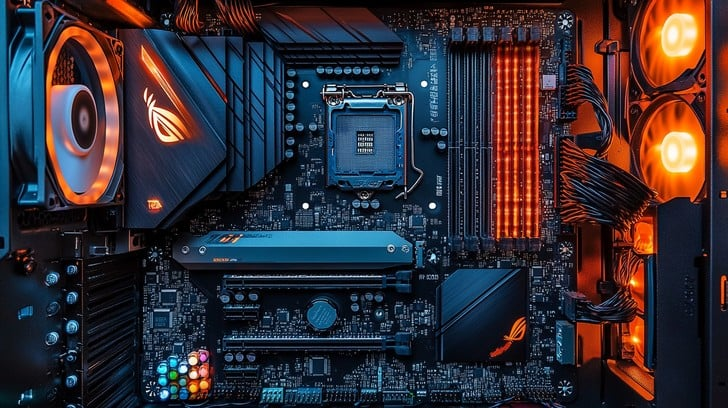

Installation and Set Up
Get your IT hardware up and running hassle-free! Our team handles the professional installation and setup of computers, servers, and networking devices, ensuring optimal performance and seamless integration with your existing systems.
We take care of everything, from configuring software to connecting peripherals and testing system functionality. Our experts ensure that all devices are properly installed, secured, and optimized for smooth operation. Whether you're upgrading your infrastructure or setting up new equipment, we provide a stress-free experience with minimal disruption to your workflow. Let us handle the technical details while you focus on what matters most—your business.
- ✅ Hardware and Software Installation
- ✅ System Configuration and Optimization
- ✅ Network and Security Setup
- ✅ Data Migration and Backup
- ✅ User Training and Support